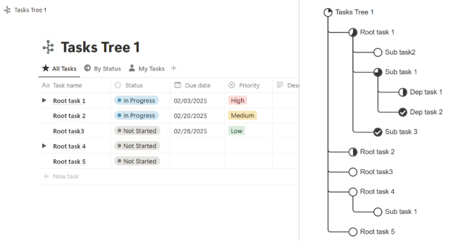

TreeNode - Notion Task Tree Viewer
Visualize your Notion database tasks as a tree structure to improve project management efficiency

✨ Features
🌳 Tree Structure Visualization
Display tasks from Notion database in an intuitive tree structure, clearly showing hierarchical relationships between tasks.
🔌 Simple Integration
One-click Chrome extension installation, no complex configuration needed, works on any Notion page.
🔍 Auto-Detect Database
Intelligently recognizes the Notion database structure of the current page and automatically parses task relationships.
🔢 Progress Display
Real-time display of task completion status to help track project progress.
🔧 Installation
From Chrome Web Store
- Visit Chrome Web Store
- Click "Add to Chrome" button
- Click "Add extension" in the confirmation dialog
- After installation, the extension icon will appear in the Chrome toolbar
📖 Usage Guide
Usage Steps
- Open Notion Database: Open a Notion database page containing tasks in your browser
- Click Extension Icon: Click the TreeNode extension icon in the Chrome toolbar
- View Tree Structure: The extension will automatically analyze the database structure and generate a tree view
- Interactive Operations: You can expand/collapse nodes and view task details
🔗 Prerequisites
To use TreeNode, your Notion database needs to contain the following fields:
- Title: Task name
- Status: Select field for tracking task progress
- Parent task: Relation type field for establishing hierarchical relationships between tasks
- Sub-task: Relation type field for establishing hierarchical relationships between tasks
💡 Product Thinking
User Pain Point Analysis
- Visualization Need: Notion's native interface lacks intuitive hierarchical relationship display
- Project Management Efficiency: Task relationships in complex projects are difficult to understand and track
- Cognitive Load: Traditional table view increases user understanding cost
Solution Design
- Tree Visualization: Uses intuitive tree structure to display task hierarchy
- Seamless Integration: As a browser extension, doesn't affect existing workflow
- Automated Processing: Intelligently parses database structure, reducing user configuration
Technical Implementation Highlights
- Chrome Extension API: Leverages browser extension capabilities to access page data
- DOM Parsing: Intelligently recognizes Notion page structure and data
- Data Visualization: Uses libraries like D3.js to implement interactive tree diagrams